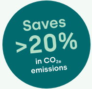

polycirQ turns printed production waste into virgin-like recyclate.
With our deinking service, flexible packaging converters eliminate production waste and increase recycled content in their high-quality products at the same time.
Too much plastic gets wasted and downcycled.
The collected waste from households and industrial consumers contains not only valuable LDPE, but also contaminants (e.g., foreign materials, organic residue, and printing inks). Unfortunately, these contaminants cannot be removed completely in state-of-the-art recycling processes causing the recyclate to have inferior mechanical properties, dark color and a strong smell.
The recyclate therefore cannot go back into the original application (e.g., food packaging) but gets downcycled. Typical applications for post-consumer recyclate are pipes or refuse bags. It is unlikely that these products will be recycled again any time soon fueling the demand for virgin plastic.
Plastic converters produce ~5-7% of production waste that is almost impossible to prevent. This waste is already printed and therefore cannot be remelted and readily fed back into production. Even though this post-industrial waste is not as heavily contaminated as post-consumer waste, printing ink still poses a challenge to the recycling process.
The produced post-industrial LDPE recyclate is also heavily colored and often smelly. This unsightly recyclate cannot become high-quality packaging on a supermarket shelf again. It is doomed to get downcycled into carrier bags or construction film.
Printing inks hampering recyclate quality is where polycirQ comes into play. The polycirQ process removes printing inks from printed plastic waste during the mechanical recycling process. The process yields virgin-like recyclate that can go back into high-quality packaging.
The polycirQ process will initially be focused on recycling printed post-industrial waste. This can already save up to 500.000t in European LDPE demand – equivalent to 20.000 trucks filled with LDPE resin every year. Our vision at polycirQ, however, is to produce virgin-like recyclate from any waste stream.
We advance circular plastic use through our convenient recycling service.
-
Extrusion enables supply of homogenized material (e.g., pellets)
You can reinsert the material into your production at your desired dosage
-
Onsite quality control ensures consistent output quality of your recyclate
Our granulate is certified by independent bodies (ISO DIN EN [XXXX])
-
polycirQ applies an aqueous process to remove printing inks from material
Our proprietary deinking additive enhances the washing performance
Closed loop water purification process -
Brand OwnerEnd customerPackaging containing recyclatePackaging containing recyclateSustainability requestSustainability requestYou receive virgin-like recycled granulate from your own scrap materialWe pick up your printed scrap at your production facility
Is polycirQ’s deinking service a fit for your production waste?
You produce sizeable amounts of surface printed mono PE or PP waste p.a.
Your production is located in central Europe
You have extrusion and printing capabilities to process recyclate
You want to offer sustainable packaging to your customers
Dr. Anne Vos
CEO
Ingo Fehr
CTO
Julia Kredel
R&D
Christian Wittkowski
R&D
Rohan Punamiya
Customer support
Marvin Aundrup
Business develop.
We are circular-driven
polycirQ was founded as independent subsidiary of Siegwerk, one of the world’s largest leading packaging inks and coatings producers. Siegwerk acknowledges the role that inks and coatings play in the recycling process and wants to be part of the solution.
Within its core business, Siegwerk works towards higher recyclability of packaging through innovative inks and coatings. polycirQ will work from the other end by establishing a recycling infrastructure that turns printed packaging waste into high-quality recyclate again.
polycirQ is here to elevate circularity in packaging.